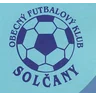

Posledný zápasPrípravka U11
 TJ Družstevník Jacovcedomáci
TJ Družstevník JacovcedomáciVýsledok 5:7
 Ludanice U11hostia
Ludanice U11hostiaVýhrapolčas 2:4
Návrh webu · nie je to oficiálna stránka klubu
III. liga prípraviek U11, 2. miesto z 5
Posledný zápasPrípravka U11
TJ Družstevník JacovcedomáciVýsledok 5:7
Ludanice U11hostiaVýhrapolčas 2:4
6–0–2výhry, remízy a prehry vo všetkých súťažiach, skóre 51:26
Ďalšie zápasy zatiaľ nie sú vyžrebované.
III. liga prípraviek U11
| # | Tím | Z | V | R | P | Skóre | B |
|---|---|---|---|---|---|---|---|
| 1 | OFK Nitrianska Blatnica | 8 | 8 | 0 | 0 | 98:17 | 24 |
| 2 | 8 | 6 | 0 | 2 | 51:26 | 18 | |
| 3 |  OFK Solčany | 8 | 2 | 2 | 4 | 32:39 | 8 |
| 4 | 8 | 2 | 2 | 4 | 31:52 | 8 | |
| 5 | 8 | 0 | 0 | 8 | 15:93 | 0 |
Hráči, ktorí v kalendárnom roku 2026 nastúpili alebo boli v nominácii na zápas (podľa Sportnetu). Pri mládeži uvádzame len mená.